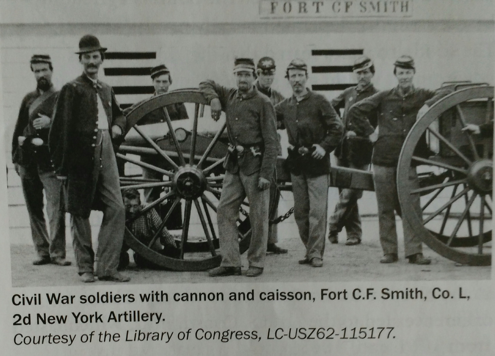

The Louisiana Territory was a large area west of the Missippi River. It was 828, 000 square miles. In 1803, the United States bought the Louisiana Territory from France for $15 million. The Lousiana Purcharse Treaty was signed in Paris on April 30, 1803. It was the largest acquisition of land in American history. Farmers could now ship their farm products down the Missippi River without permission from other countries. This was important because the city of New Orleans was a major shipping port. The Louissiana Purchase doubled the size of the United States and expanded it westward. Meriwether Lewis and William Clark led an expedition to map the Loussiana Territory.
The United States fought four major wars in the 1800s -the War of 1812, the Mexican-American War, the Civil War, and the Spanish-American War.
The War of 1812 lasted from 1812 throught 1815. President James Madison asked Congress to declare war on Great Britain. The British were stopping and seizing American ships. They were also arming American Indians to fight against the Americans. As a result of this war, the nation's trade was disrupted and the U.S Capitol was burned. The Americans won the war. This was the first time after the Revulutionary War that America had to fight a foreign country to protect its independence.
The Mexican-American War as a conflict between Mexico and America. The war began in Texas in 1846. President James Polk ordered General Zachary Taylor and his forces to occupy land claimed by both the United States and Mexico. President Polk believed westward expansion was important for the United States to grow. When Mexico attacked, the United States went to war with Mexico. When the war ended in February 1848, the United States and Mexico the Treaty of Guadalupe Hidalgo. This treaty gave Texas to the United States and extended the boundaries of the United States west to the Pacific Ocean.
In the Civil War, the people of the United States fought against each other, Americans in the northern states fought to support the federal government ("the Union") against American from the southern states. The southern states traying to separate themselves to form a new nation, the Confederate States of America ("the Confederacy"). The war lasted from 1861 to 1865, when the Confederate army surrended to the Union army. Many lives were lost in the American Civil War.
In 1898, the United States fought Spain in the Spanish-American War. The United States wanted to help Cuba become independent from Spain because the United States had economic interests in Cuba. The war began when a U.S. battleship was sunk near Cuba. Many americans believed it was the Spanish who attacked the ship. For this reason, America went to war with Spain. By the end of 1898, the war was over with a victory fo the United States. Cuba had its independence, and Guam, Puerto Rico, and the Philippines became territories of the United States.
The American Civil War is also known as the War between the States. It was a war between the people in the northern states and those in the southern states.
The Civil War was fought in many places across the United States, but most battles were fought in the southern states. The first battle was at Fort Sumter, South Carolina. Ths first major battle between the northern (Union) army and the southern (Confederate) army took place at Bull Run, in Manassas, Virginia, in July 1861. The Union expected the war to end quickly. After its defeat at the Battle of Bull Run, the Union realized that the war would be long and difficult. In 1865, the Civil War ended with the capture of the Confederate General Robert E. Lee surrendered to Lt. General Ulysses S. Grant of the Union Armyat Aponmattox Courthouse in central Virginia. Over the four-year period, more than 3 million Americans fought in the Civil War and more than 600,00 people died./p>
The Civil War began when 11 southern states voted to secede ( separate) from the United States to form their own country, the Confederate States of America. These southern states believed that the federal government of the United States threatened their right to make their own decisions. They wanted states' rights withe each state making their own decisions about their government. If the national government contradicted, they did not want to follow the national government. The North and South had very different economic systems. The South's agriculture-based economy depended heavily on slave labor. The southern states feared that the United States government would end slavery. The southern states believed that this would huert their economic and political independence. The economy of the northern states was more industrial and did not depend on slavery. The northern states fought to keep all the United States together states fought to keep all the United States together in "the Union". They tried to stop the southern states from separating into a new Confederate nation. There were also many people in the North who wanted to end slavery. These differences led to the American Civil War, which lasted from 1816 until 1865.
Abraham Lincoln was president of the United States from 1861 to 1865, and led the nation during the Civil War. Lincoln thought the separation of the southern (Confederate) states was unconstitutional, and he wanted to preserve the Union. In 1863, during the Civil War, he issued the Emancipation Proclamation. It declared that the slaves who lived in the rebelling Confederate states were forever free Lincoln is also famous for his "Gettysburg Address". He gave that speech at Gettysburg, Pennylvania, in November 1863. Earlier that year, at the Battle of Gettysburg, the northern (Union) army had won a major battle to stop the Confederate army form invading the North. To honor the many who died in this battle, the governor of Pennsylvania established the Soldiers' National Cementery at Gettysburg. Lincoln spoke at the dedication ceremony and praised those who fought and died in battle. He asked those still living to rededicate themselves to saving the Union so that "government of the people, buy the people, for the people shall not perish from the earth". On April 14, 1865, soon after taking office for his second term, Abraham Lincoln was killed by a southern supporter, John Wilkes Booth, at Ford's Theatre in Washington, D.C.
In 1863, in the middle of the Civil War, President Abraham Lincoln issued the Emancipation Proclamation. The Emancipation Proclamation declared that slaves living in the southern or Confederate states were free. Many slaves joined the Union Army. In 1865, the Civil War ended and the southern slaves kept their right to be free. The Emancipation Proclamation led to the 13th Amendment to the Constitution, which ended slavery in all of the United States.
Susan B. Anthony was born in Massachusetts on February 15, 1820. She is known for campaigning for the right of women to vote. She spoke out publicly against slavery and for equal treatment of women in the workplace. In 1920, the 19th Amendment to the Constitution gave women the right to vote. Susan B. Anthony died 14 years before the adoption of the 19th Amendment, but it was still widely known as the Susan B. Anthony Amendment. In 1979, she became the first woman whose image appeared on a circulating U.S. coin. The coin is called the Susan B. Anthony dollar and is worth one dollar.